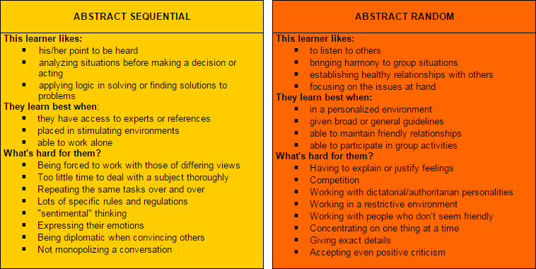

I am introduced to the world of coding relatively late in life. mid-life to be precise. And I gotta say it’s quite a challenge. There’s a lot to learn and whole lot to remember. Curiously, it’s not just the materials and new concepts that catches me of guard, but how much I have to know myself that is the real eye-opener.
I don’t mean to suggest that I don’t know myself, but rather that I never gave a lot of thought to things like…well, how I think. As part of its curriculum, DevBootcamp requires us to take a couple of self-directed assessments so we can get a picture of how it is we interact with data, with each other and with the world in general. One of those assessments is something called a Personal Thinking Styles test. (I’ll provide a link to it at the end of this entry.) The results of this test fascinated me because it revealed a dichotomy in how I think.

The graphic above shows the type of thinker I am, or rather the types. Turns out that I’m definitely an abstract thinker but I’m pretty evenly divided between being sequential and being random. Abstract thinkers tend not to organize thoughts in linear fashion and have preferences in dealing with people over data. That dichotomy I spoke of a second ago is between the sequential and random parts of how I like to do things. Apparently I prefer being heard, but also like to listen to others. I prefer analyzing situations before acting and applying logic in problem solving, but I also have a particular need to focus on group harmony and establishing healthy relationships.
Where this assessment becomes relevant to my experience in this first Unit of DBC’s curriculum is in what kind of environment I would have optimal learning, and what kinds of learning challenges are unique to abstract, sequential/random thinkers.
People in my category thrive when supported emotionally and respected as human individuals. We need to have groups to participate with and still have the freedom to worn on some things on our own. We’re stymied by overbearing and restrictive rules, dislike conflict and either lose focus for boredom with repetition, or find it difficult to focus given too much stimulus.
So far, I and the cohort to which I belong (cohort… kind of militaristic, huh? Cohort hears a who!) … we’ve been remote learning and are able to get together only when scheduled, via GoogleChat for short intervals. This answers some of the needs I have for needing to work on things alone, and having minimal conflict in my environment, but is hell for me when it comes to fulfilling my needs for healthy relationships and working in a group.
This first three weeks has taught me that I need to make myself available to my cohort online with more frequency, even if it’s just for a casual chat. More importantly it would give me a sense that I am actually bouncing ideas off other people and developing relationships. I will be making a greater effort to be more accessible and taking more initiative in contacting this wonderful group of people.
Fortunately another concept we’ve covered called the Fixed versus Growth Mindset, validated that I am at least partly flexible in how I think, learn and grow. That flexibility and willingness to accept kind feedback and admit that I have plenty of room to improve will go a long way toward me adapting to a way of doing things different than I currently am. For sure, I’ll be reaching out more and putting my thinking style to practical use in the process.
That’s all for now. May spirit watch over you.